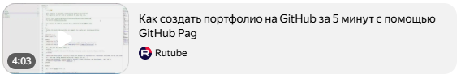

1
2
3
4
5
6
7
8
9
10
11
12
13
14
15
16
17
18
19
4.17 Портфолио на GitHub
В этом уроке вы добавите описание профиля на GitHub с помощью README.md файла. Я покажу как оформить профиль
на GitHub.
Таким образом можно оформить своё портфолио прям на GitHub.
Мой GitHub профиль
Портфолио на GitHub — это коллекция проектов, размещённых на платформе, которая
демонстрирует навыки разработчика, стиль
кодирования и вклад. Обычно портфолио включает репозитории с кодом, документацию и иногда личные веб-сайты
или
приложения.
Преимущества портфолио на GitHub:
- демонстрирует реальный код, стиль программирования, используемые технологии;
- подчёркивает непрерывное обучение и рост разработчика;
- демонстрирует способность работать с другими (функции GitHub для совместной работы,
например, запросы на извлечение,
проблемы и обзоры кода).
Структура
Для каждого репозитория в портфолио рекомендуется включить README-файл. В нём нужно описать цель
проекта, инструкции по
установке и примеры использования. Некоторые элементы README:
- название и краткое описание проекта;
- скриншоты или гифки с результатом;
- инструкция по запуску (например, как установить зависимости);
- технологии, которые использовались (Python, React, CSS и т. д.);
- ссылки на демо, если проект можно протестировать онлайн.
Важно: портфолио должно быть компактным и целевым — выбрать 3–5 проектов, которые показывают
лучшие навыки.
Создание
Можно создать портфолио на GitHub Pages — сервисе, позволяющем размещать статические
веб-сайты
непосредственно из
репозитория.
Процесс создания:
- Создать учётную запись на GitHub. Если её ещё нет, нужно зарегистрироваться и выбрать
профессиональное имя, которое
станет частью URL для портфолио.
- Создать новый репозиторий. Назвать его, например, your-username.github.io (replacing
your-username с логином на GitHub).
- Настроить README — добавить контент для портфолио, используя язык Markdown.
- Включить GitHub Pages — в репозитории нужно нажать «Настройки» в верхней части,
прокрутить
вниз до раздела «GitHub
Pages» и выбрать «Основной» (или «Мастер»).
- Настроить дизайн — можно выбрать тему из коллекции GitHub Pages или использовать
шаблон.
Видео с инструкцией по созданию портфолио на GitHub:

Продвижение
Портфолио на GitHub можно продвигать:
- Использовать профиль на GitHub — добавить фотографию профиля, краткую биографию, опыт
работы и достижения.
- Регулярно обновлять портфолио — добавлять новые проекты, улучшать существующие и
обновлять документацию.
- Участвовать в Open Source-инициативах — например, в проектах, где участники поощряются
за создание pull requests в
открытом репозитории.
Как оптимизировать портфолио на GitHub для поиска работы?
Несколько рекомендаций, как оптимизировать портфолио на GitHub для поиска работы:
- Выбрать подходящие проекты. В портфолио должны быть проекты, которые показывают лучшие
навыки разработчика. Стоит
обратить внимание на проекты, решающие реальные задачи, разнообразные и имеющие практическую ценность
- Оформить проекты понятно. Заказчики не всегда разбираются в программировании, поэтому
проект должен быть визуально
привлекательным. Можно использовать эмодзи, которые помогут сразу понять суть проекта.
- Сделать профиль GitHub профессиональным. Профиль — это резюме, и заказчик сначала
смотрит на него, а потом на проекты.
Можно закрепить ключевые проекты, добавить статистику, например, показать, как часто пишется код.
- Добавить дополнительную информацию. Можно указать имя и фамилию, написать, чем
занимается разработчик, добавить
дополнительную информацию, например, город проживания или ссылку на резюме.
- Использовать теги. Это теги, с помощью которых проект лучше ранжируется во внутренней
поисковой системе GitHub. В них
можно указать технологии, которые использовались, и ключевые слова о проекте.
- Регулярно обновлять портфолио. Нужно добавлять новые проекты, обновлять существующие и
поддерживать актуальную
документацию.
- Продвигать портфолио. Можно добавить ссылку на GitHub в профили на биржах, делиться
проектами в соцсетях, например, в
LinkedIn или Telegram-каналах для разработчиков, писать статьи о своих проектах.
Как правильно использовать теги в портфолио?
Теги в портфолио на GitHub нужно использовать, чтобы проект лучше ранжировался во внутренней поисковой
системе
платформы.
В тегах можно указывать, например:
- технологии, которые использовались в проекте (например, React, Node.js);
- ключевые слова, описывающие проект (например, веб-приложение для управления задачами).
Чтобы оптимизировать портфолио для поисковых систем, в тегах также можно использовать метатеги. Они помогут
поисковым
системам понять, о чём идёт речь в портфолио.
Таким образом, правильное использование тегов позволяет сделать портфолио более доступным для поиска и
привлечения
внимания потенциальных работодателей.
Как правильно формулировать ключевые слова для тегов?
При формулировке ключевых слов для тегов портфолио на GitHub рекомендуется начинать с используемых в
проекте технологий.
Некоторые из них: JavaScript, ReactJS, Python, Java, C#, Laravel, PHP, REST, MongoDB, Node, PostgreSQL, SPA,
web
app,
AMP, CSS, HTML.
Затем можно добавить два-три ключевых слова, которые описывают сам проект. Например: game,
casual game, database,
movies, weather, demo, educational, tutorial.
Также важно, чтобы название проекта было запоминающимся и чётко отражало его суть. Например, вместо
абстрактного
«MyProject» лучше использовать «TaskManagerApp» (Приложение для управления задачами) или
«SimpleTodo» ( Простой способ )
Кроме того, рекомендуется использовать ключевые слова, которые соответствуют популярным поисковым запросам.
Так, если
проект — это библиотека для работы с API, можно добавить такие слова, как REST API, client library,
automation.